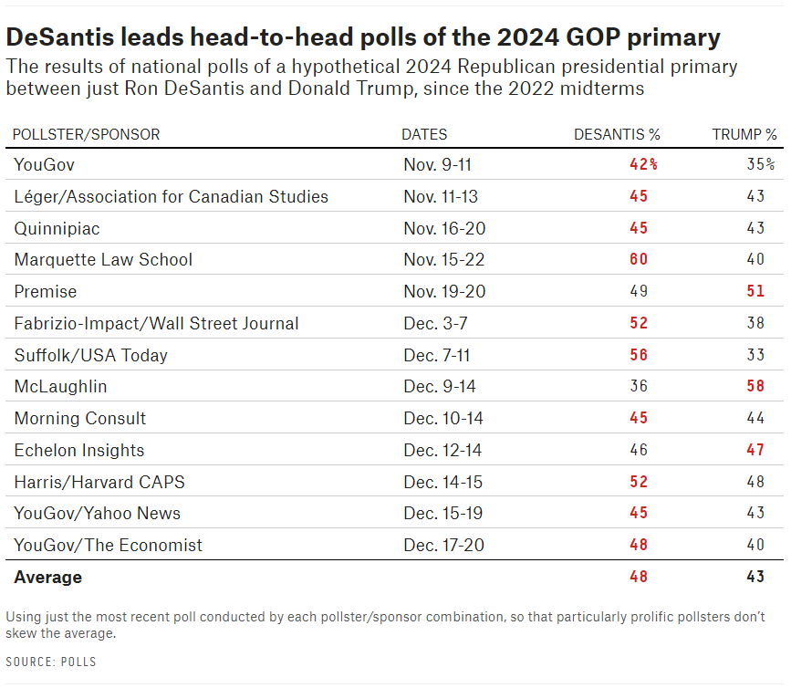
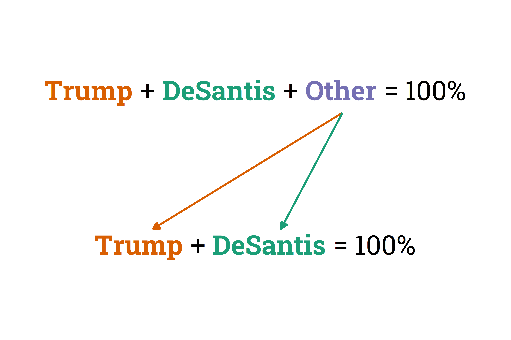
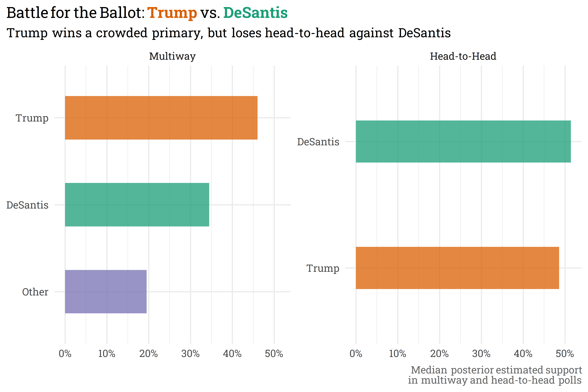
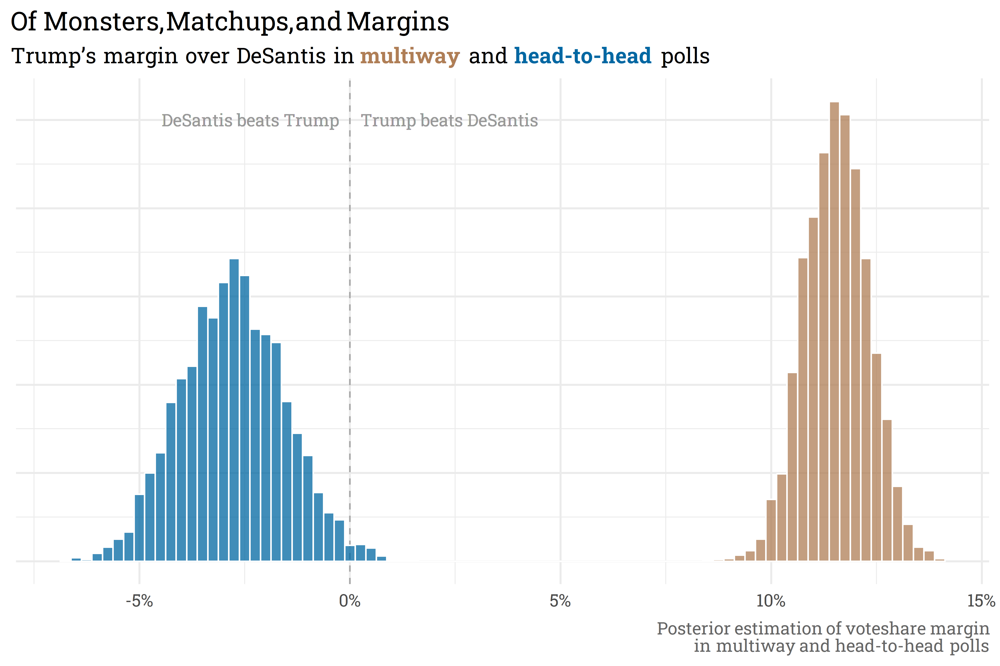
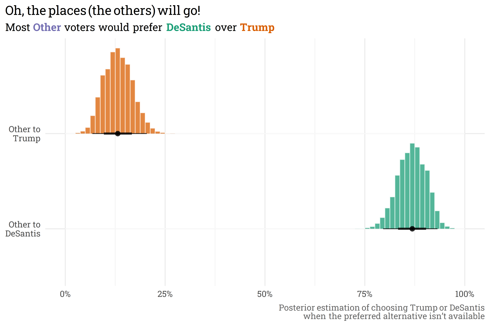

Late last year, Donald Trump officially announced his candidacy for the 2024 presidential election. To secure the Republican party’s nomination, he’ll have to best Florida’s governor, Ron DeSantis, who, despite not having yet announced his intention to run, is currently viewed as the only serious challenger to Trump for the nomination. It’s really far too early to be digging into the 2024 presidential election, but pollsters are gonna do what pollsters are gonna do, so we already have a cadre of primary polls comparing Trump to DeSantis.
Nathaniel Rakich recently wrote an article for FiveThirtyEight in which he examined recent Republican presidential primary polls and came to an interesting conclusion. When pollsters ask respondents to choose from a sea of potential primary candidates, Trump easily bests DeSantis. In head-to-head polls, however, DeSantis more often comes up as the front-runner.


This is a classic example of the spoiler effect, in which the presence of alternative candidates on the ballot curbs one candidate’s ability to win a plurality of votes against an opposition candidate — in this case, the alternative candidates draw votes away from DeSantis. Standard statistical assumptions/rules state that questions with different possible responses should be evaluated separately, and Rakich rightly splits his analysis between the multiway and head-to-head polls.
From an intuitive sense, however, it feels like we should be able to evaluate these different sets of polls jointly. While the set of candidates may differ, they’re asking the same sort of question — which candidate Republican primary voters would like to see as the party’s nomination. The only difference in response options is the inclusion or exclusion of alternative candidates to Trump/DeSantis. With a little nudging, however, we may be able to link the two different response scales by first estimating the proportion of respondents who would select an alternative to Trump/DeSantis, then estimating the proportion of these “Other” votes that would go to Trump or DeSantis if forced to make a choice in a head-to-head poll.
Another way of looking at it: we know that these “Other” votes need to go somewhere when presented with a different response scale. Graphically, our goal is to link the two different response scales by estimating the size of the orange/green arrows below.

Using the same polls that were included in Rakich’s analysis and plunking them into a model that accounts for the structure above comes to largely the same topline conclusions as Rakich — when there are many candidates on the ballot Trump handily wins but in head-to-head competitions DeSantis bests Trump.

Alternatively, expressed as a margin, Trump would be expected to beat DeSantis in the primary by 10-13% if there are many candidates on the ballot, while he would expect to lose to DeSantis by 1-5% in a head-to-head matchup.

Again, this is thus far very similar to what Rakich found with a simple average of polls. The benefit of modeling, however, means that we can additionally estimate the proportion of voters who would switch from an alternative to Trump/DeSantis if forced to do so! Of the voters who select other candidates in multiway polls, we expect that somewhere between 80-93% would prefer DeSantis in a head-to-head matchup, with Trump receiving the remaining 7-20%.

Under the hood, this uses Stan to estimate the model parameters (you can view the full model here). This is a bit like using a sledgehammer to put a nail into the wall — it’s a bit overkill. This is a pretty simple model that could’ve been estimated analytically, but this was also a good coding exercise that opened the door to building more complicated/useful models with this linked structure in the future. You should take the results with a bit of a grain of salt — the relatively simple model is probably overconfident in its estimations and there’s a lot of time for things to change between now and the 2024 election.
Citation
@online{rieke2023,
author = {Mark Rieke},
title = {Trump Vs. {Desantis} in 2024 {Republican} {Primary}
{Polling}},
date = {2023-01-21},
url = {https://www.thedatadiary.net/posts/2023-01-21-trump-vs-desantis-in-2024-republican-primary-polling},
langid = {en}
}